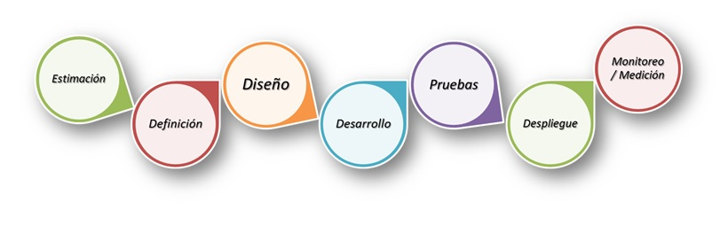

Metodologías de desarrollo de Software
Metodologías de desarrollo de Software
Las metodologías ágiles y tradicional (Waterfall) son dos métodos distintos de desarrollar software.
La metodología “Waterfall” tradicional para el desarrollo de proyectos de software está cayendo en popularidad por diversas razones, entre ellas el que metodologías ágiles se están adoptando cada vez más seguido. Pero, ¿exactamente cuál es la diferencia entre estas dos? Y ¿las metodologías ágiles son siempre mejores?
¿Qué es una metodología tradicional Waterfall?
La metodología tradicional puede ser descrita básicamente como un modelo lineal para el diseño de software. Como su nombre sugiere (Waterfall) emplea una secuencia de diseño de procesos. El desarrollo fluye secuencialmente de inicio a fin.
En el modelo Waterfall, cada etapa del ciclo de vida del producto se ejecuta en secuencia, por lo que el progreso general fluye en un solo sentido hacia abajo etapa por etapa.
Nadie invento esta metodología, más bien fue heredado por la industria del software de otras industrias donde, una vez que una etapa se completaba (como por ejemplo construir los cimientos de un edificio), era extremadamente costoso o poco práctico el regresar y hacer cambios, por lo que cada etapa debía ser muy bien planeada al inicio del proyecto. En otras palabras, una vez que una etapa está terminada, el querer hacer cambios sobre esta etapa es o muy costoso, o pone en peligro el proyecto.
En una metodología tradicional Waterfall todos los requerimientos se juntan y el trabajo de diseño se realiza antes de que la codificación se lleve a cabo. Existen muchas metodologías Waterfall implementadas en muchos proyectos de TI, donde la PMI PMP es la más reconocida internacionalmente.
En general estas metodologías tienen etapas que documentan lo que necesitas tener, saber y hacer antes de ejecutar un proyecto. Adicionalmente tienen una serie de procesos para administrar paquetes de trabajo, excepciones, reportes, riesgos y problemas dentro del proyecto. Debido a que es un método secuencial es mucho más rígido, lo que significa que realizar cambios en la marcha implicaría que un proyecto se salga del presupuesto y/o tiempos asignados, pudiendo poner en riesgo el proyecto.
Ventajas de la metodología Waterfall
El énfasis que hacer el Waterfall está en el planeamiento del proyecto, por lo que antes de si quiera iniciar el desarrollo, todos deben tener una visión clara de donde se desea llegar. Debido a que se requiere un planeamiento exhaustivo por adelantado, se pueden medir de forma más exacta los tiempos y presupuestos del proyecto, lo que usualmente tiende a complacer al cliente.
Potenciales riesgos y/o problemas que pudieran surgir en etapas avanzadas del proyecto se puede identificar durante la etapa de planeamiento inicial, por lo que las soluciones para estos se pueden planear sin que el proyecto empiece si quiera la etapa de desarrollo.
Con este método, el proceso de documentación suele ser mucho más detallado. Muchas organizaciones encuentran esto atractivo. También, debido a que se trata de un método lineal, es más fácil de entender, especialmente para personas que no son expertos en proyectos de TI o que no cuentan con mucha experiencia. Usualmente los equipos se sienten más cómodos con este enfoque.
Desventajas de la metodología Waterfall
Es muy usual que las personas para quienes se desarrolla el software (el cliente) no tengan muy claro (o nada claro) exactamente qué es lo que necesitan, y en casi todos los casos, no saben las capacidades de la tecnología disponible en el mercado, por lo que sus requerimientos no necesariamente son lo que realmente necesitan, sino más bien, lo que creen necesitar basándose en experiencias limitadas de “algún programa” que vieron “hace tiempo”.
Esta forma de trabajo no se maneja bien. Es usual que los equipos del proyecto no puedan ver los problemas que vendrán durante la ejecución del proyecto o su implementación.
Los cambios en los requerimientos no pueden ser fácilmente incorporados con una metodología Waterfall y hay usualmente procedimientos de cambios muy laboriosos por los cuales pasar cuando existen cambios, lo cual significa por supuesto, invertir más dinero y tiempo.
En otras palabras, esta metodología es increíblemente rígida e inflexible. Alterar el diseño inicial del proyecto en cualquiera de sus etapas puede convertirse en una pesadilla, y por supuesto, una vez que una etapa se ha completado, es prácticamente imposible realizar los cambios solicitados, por lo menos dentro del tiempo y presupuesto planeados inicialmente.
Si se aplica esta metodología será necesario tener muy bien detallados todos los requerimientos del software que se vaya a desarrollar. Adicionalmente, el problema con el método Waterfall es que la etapa de pruebas se encuentra como una de las últimas etapas del proyecto. Así que si hay un problema, es muy difícil responder a este, requiriendo mayor tiempo, esfuerzo y por supuesto, dinero.